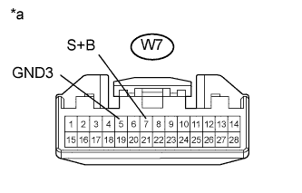
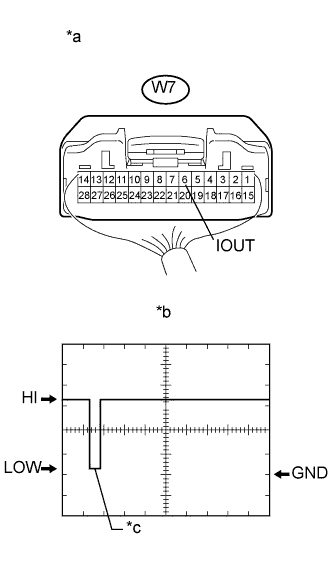

DTC B2762 Неисправность сигнальной цепи датчика проникновения |
DTC B2764 Короткое замыкание на GND в цепи сигнала датчика проникновения |
| Код DTC | Условие обнаружения DTC | Неисправный участок |
| B2762 | После того, как датчик радара противоугонной системы (датчик проникновения) выдает сигнал о нормальной работе/неисправности в результате самодиагностики, обнаруживается одна из следующих неисправностей:
|
|
| B2764 | После того, как датчик радара противоугонной системы (датчик проникновения) выдает сигнал о нормальной работе/неисправности в результате самодиагностики, обнаруживается следующая неисправность: На контакт IOUT датчика радара противоугонной системы (датчика проникновения) в течение не менее 5 с не поступает сигнал. |
|
| 1.ПРОВЕРЬТЕ ЖГУТ ПРОВОДОВ И РАЗЪЕМ (ЛАМПА ИНДИВИДУАЛЬНОГО ОСВЕЩЕНИЯ – АККУМУЛЯТОРНАЯ БАТАРЕЯ И МАССА) |
|  |
Отсоедините разъем W7 лампы.
Измерьте сопротивление в соответствии со значениями, приведенными в таблице ниже.
| Контакты для подключения диагностического прибора | Условие | Заданные условия |
| W7-5 (GND3) - масса | Всегда | Менее 1 Ом |
Измерьте напряжение в соответствии со значениями, приведенными в таблице.
| Контакты для подключения диагностического прибора | Условие | Заданные условия |
| W7-7 (S+B) - масса | Всегда | 11-14 В |
| *a | Вид спереди разъема со стороны жгута проводов: (к лампе индивидуального освещения) |
|
| ||||
| OK | |
| 2.ПРОВЕРЬТЕ ЖГУТ ПРОВОДОВ И РАЗЪЕМ (ЛАМПА ИНДИВИДУАЛЬНОГО ОСВЕЩЕНИЯ – ГЛАВНЫЙ ЭБУ КУЗОВА) |
Отсоедините разъем W7 лампы.
Отсоедините разъем G63 ЭБУ.
Измерьте сопротивление в соответствии со значениями, приведенными в таблице ниже.
| Контакты для подключения диагностического прибора | Условие | Заданные условия |
| W7-6 (IOUT) - G63-12 (ISIF) | Всегда | Менее 1 Ом |
| W7-6 (IOUT) или G63-12 (ISIF) - масса | Всегда | 10 кОм или более |
|
| ||||
| OK | |
| 3.ПРОВЕРЬТЕ ЛАМПУ ИНДИВИДУАЛЬНОГО ОСВЕЩЕНИЯ В СБОРЕ (ДАТЧИК РАДАРА ПРОТИВОУГОННОЙ СИСТЕМЫ) |
|  |
С помощью осциллографа проверьте форму сигнала.
| Параметр / Устройство | Описание |
| Контакты для подключения диагностического прибора | W7-6 (IOUT) - масса |
| Настройки прибора | 2 В/дел., 100 мс/ дел. |
| Условие | Немедленно после включения противоугонной системы |
| *a | Устройство с подсоединенным жгутом проводов (лампа индивидуального освещения) |
| *b | Осциллограмма |
| *c | Начальный ответный сигнал |
| Результат | Следующий шаг |
| OK | А |
| NG (сигнал имеет уровень LOW и не изменяется) | B |
| NG (сигнал имеет уровень HIGH и не изменяется) | C |
|
| ||||
|
| ||||
| А | ||
| ||